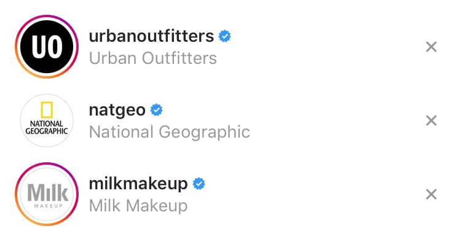
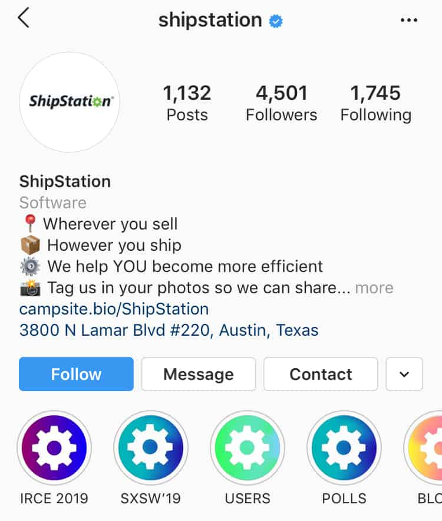
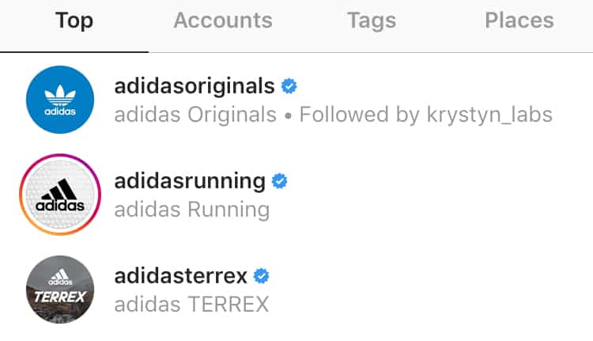
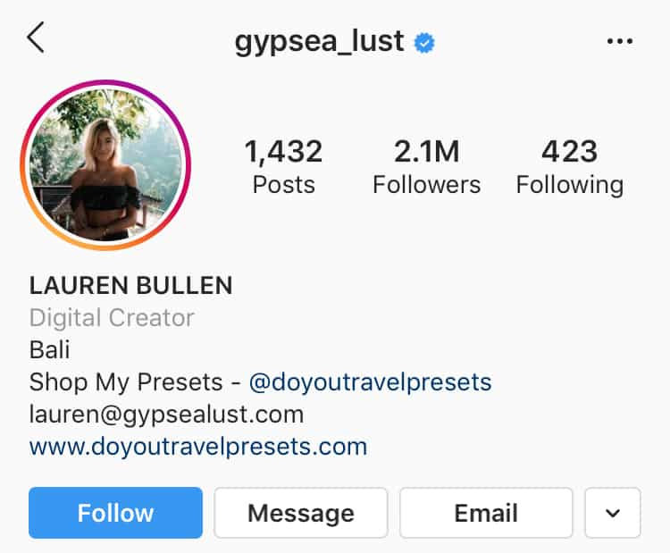
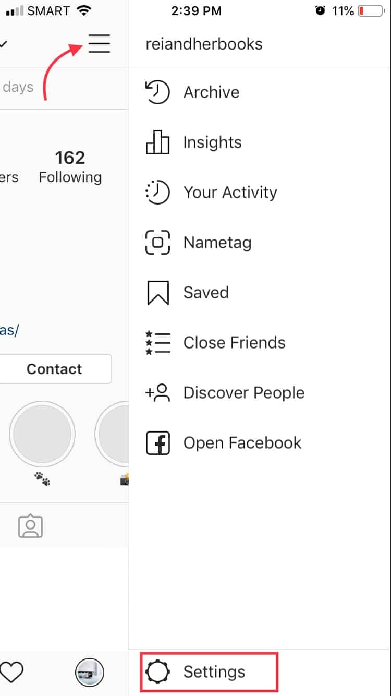
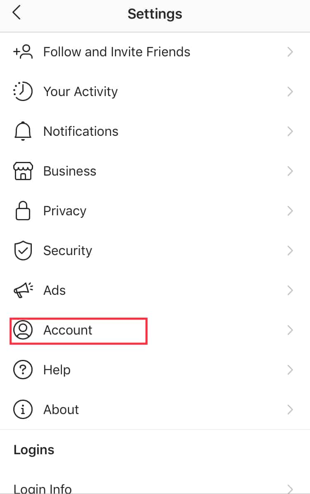
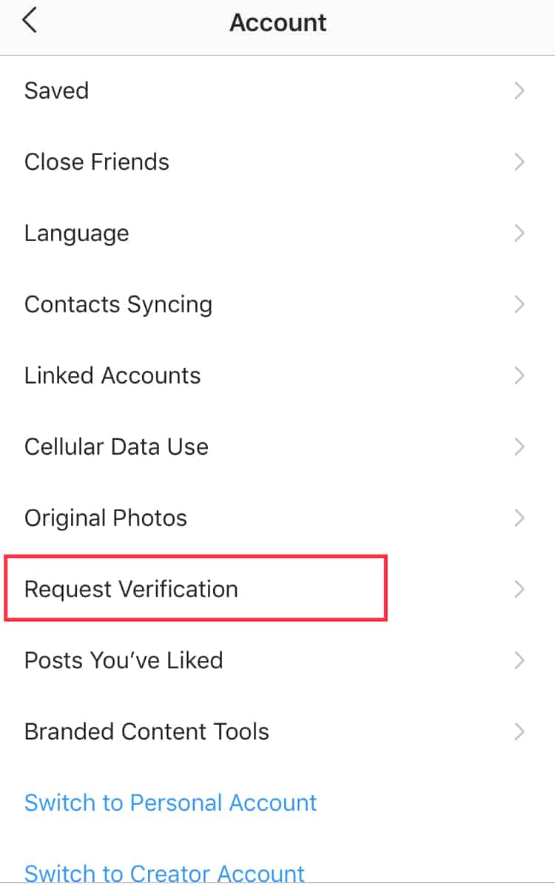
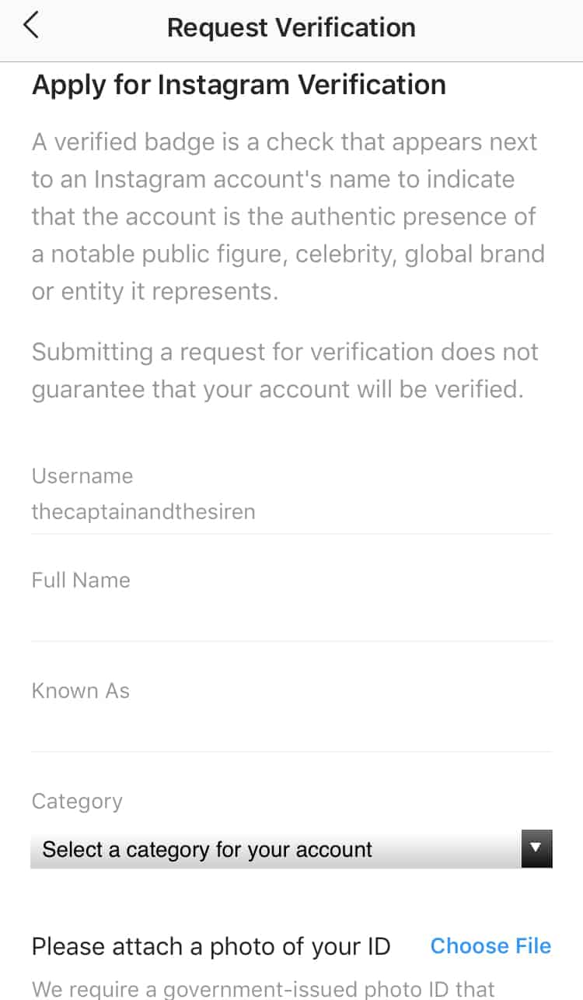
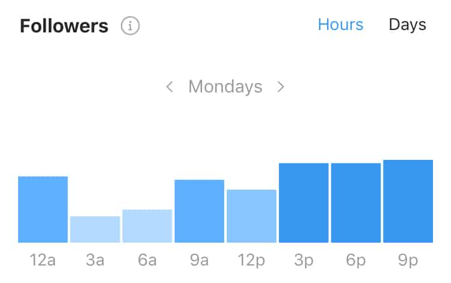

Want to get that highly coveted blue check mark? Instagram has finally revealed the requirements and verification process on how to get verified on Instagram.
For brands and influencers, verification is essential. It’s more than just a form of validation. It’s proof of authenticity. Therefore, acquiring the badge isn’t going to be easy.
If it was, everyone on Instagram will have one. But don’t fret!
In this post, we’ll discuss everything you need to know about Instagram verification. Plus we’ll give you tips to meet the strict requirements!
What Is An Instagram Verified Badge?
You’ve probably seen the little blue check mark beside an Instagram name. According to Instagram, it confirms that the account is verified. In other words, the brand, business, or individual behind the account is authentic and legitimate.

The badge gives users peace of mind that the account is real. Additionally, it has become a status symbol. Why?
Anyone who is anyone has earned a blue badge. Basically, if you have been verified, you must be somebody!
Need More Reasons To Request Verification Badge?
Build Trust
Let us be perfectly clear: the blue badge doesn’t stop others from impersonating you. However, it reassures your audience that you’re the real deal. This is more than enough reason to learn how to get verified on Instagram.
Let’s say, for example, you’re hosting a giveaway or deal. Instagram users might be skeptical to join. However, if they see a verification badge, they’re likely to see your account as trustworthy.
Credit: Farmacy via @farmacybeauty
Prevent Identity Theft
Instagram is teeming with fake accounts. These accounts can tarnish a celeb’s or brand’s name, making a bad impression. For this reason, it’s best to get verified quickly. It prevents identity theft and assures your audience which one’s real and which is fake.
Increase Brand Awareness
Verified profiles appear at the top of the search and suggested accounts. Some believe that the Instagram algorithm favors verified accounts. This boosts brand awareness and follower count.
Bring Business Opportunities
Being verified on Instagram can open a plethora of opportunities. Even if a brand or influencer hasn’t heard of you before, the badge indicates that you’ve made a mark in your industry. This can spark interest or collaboration.
Access To Exclusive Features
Want to have early access to new Instagram features? Then learn how to get verified on Instagram and get that badge!
For instance, the Swipe Up feature. An account needs to have more than 10,000 followers to enjoy this perk. But verified accounts are exempted!

Ready to send an Instagram request verification?
How To Get Verified On Instagram Tip #1: Requirements To Get Verified
First of all, you need to know the requirements on how to get verified on Instagram.
According to Instagram, you need to be a public figure, celebrity, or brand. Additionally, you need to meet eligibility requirements. This includes following the platform’s Terms of Service and Community Guidelines.
Think you’ll make the cut? Here is a breakdown of Instagram request verification requirements:
Authentic
You need to prove that you are who you say you are. Your account must represent a real person, registered business, or entity.
Unique
Remember, only one account per person or business may be verified. The only exception is language-specific accounts.
The one-verified-account-per-business has other exceptions. Take for example Adidas. They have verified accounts for different categories.

Note: General accounts like those posting memes don’t get verified badges.
Public
Another requirement on how to get verified is to set your account public. Your account should be viewable by everyone.
Complete
When submitting a request for Instagram verification badge, make sure your profile is complete. It must have:
- Bio
- Profile photo
- At least one post.
- It should not contain “add me” links to other social media.

Notable
Lastly, your account must be notable. Basically, it should represent a well-known and highly searched person, brand, or entity.
Credit: Lana Condor via @lanacondor
Are you notable enough? Instagram says they check whether the individual, brand, or entity is featured in multiple news sources. Remember, paid and promotional content is excluded.
This is why the Instagram verification badge is highly coveted. Being “notable” is hard to measure.
How To Get Verified On Instagram Tip #2: Request Verification Badge
The next step on how to get verified on Instagram is to send a request directly from the app. Here’s how:
First, log into your account. Then tap the three lines at the top-right corner. This will open the sidebar menu. Choose Settings.

Tap Account. Scroll down then tap for Request Verification.


Confirm your identity by filling in the necessary details.

This includes:
Username: Remember to only request verification for one account. It should represent a unique person or registered business.
Full Name: Provide your full, legal name. It should be the same as what appears on your government-issued ID.
Known As: This could be your name or company name. Use the name that you’re known as.
Category: Choose your niche or industry.
Lastly, upload a photo of your government-issued ID or official business document.
For individuals, you can use:
- Driver’s license
- Passport
- Government ID card
For businesses, you can use:
- Tax return
- Company utility bill
- Articles of incorporation
Once done, just tap Send!
How To Get Verified On Instagram Tip #3: Wait For Notification
Once the request verification badge is submitted, Instagram will review it. All that’s left is wait to be notified.
Instagram doesn’t have a specific timeline. However, in case you’re denied, you’ll have to wait 30 days before sending a request verification badge again.
If the request is granted, you’ll get the coveted blue check mark on your account.
Note: Instagram doesn’t request any payment for verification. They also do not send direct messages or emails to confirm your verification.
Can Instagram remove Instagram verification badge?
Yes. In fact, they may take extra steps to delete your account.
Here are a few of the reasons for badge removal:
- When you advertise, transfer, or sell your verified badge.
- Provide false or misleading information during the request verification process.
- Use your profile photo, bio, or Instagram name section to promote other services
- If you try to use a third-party app to verify your account.
What if your Instagram request verification was denied?
No need to worry! You can try again after 30 days. But in the meantime, here are a few tips to increase your chances of getting approved.
How To Get Verified On Instagram Tip #4: Be Active On Instagram
To be a candidate for verification, you must have at least one post. But in reality, you need a more robust Instagram presence.
One of the best ways on how to get verified on Instagram is to be active. Post new and high-quality content regularly. If you’re having trouble with the upkeep, consider hiring an Instagram manager.
Here are a few tips to stay active:
- Have a photo stock: Make sure that you have enough photos to last a couple of days. Then schedule them. In doing so, you’ll never run out of content.
- Use Instagram Insights: Use this feature to plan your content. Post photos and videos that resonate with your audience. Additionally, your content should be in line with your brand.
- Engage with your audience: We cannot stress how important it is to engage with your audience. Invest time in liking posts and responding to comments. Engagement is essential in social media.
How To Get Verified On Instagram Tip #5: Boost Your Engagement And Follower Count
You don’t need to hit a specific follower count to be verified. However, one of the verification requirements is “notability”. A higher follower count may indicate noteworthiness.
Here are a few tips:
Build a brand personality: Be consistent with your voice and theme. In doing so, you’ll create a stronger connection with your audience.
Be an expert in your niche: Your audience must recognize your expertise in your industry. Take for example, Liah Yoo.

Credit: Liah Yoo via @liahyoo
She started with a YouTube channel, where she developed a reputation as a skincare guru. Now she is the founder of Krave Beauty, a beauty brand.
Post consistently and frequently: In doing so, your audience will know when they can expect content from you.
Develop high quality and valuable content: Determine the type of content your audience wants. It should provide value and encourage discussions.
Most importantly, take time to engage with your audience. As a tip, reply to audience comments and messages.
To encourage engagement, post content when your audience is most active. Get as many people as possible to see your latest posts.

This might mean you’ll compete with other brands and businesses. However, if you post high quality, valuable content, you’ll stand out from the rest.
How To Get Verified On Instagram Tip #6: Determine Your Risk Of Being Impersonated
As we’ve mentioned in the early part of this post, Instagram considers your risk of being impersonated.
If your follower count is low, no one will try to impersonate you. Therefore, the larger your account, the more likely it’ll be copied. As a result, Instagram is more inclined to grant you a verification badge.
Credit: Nadine Lustre via @nadine
How To Get Verified On Instagram Tip #6: Work On Being Newsworthy
Want to get that coveted blue check mark? Show Instagram that you’re newsworthy!
Remember, real people manually review each verification request. There’s no algorithm you can try to hack.
First of all, try to google your name or your business name. What comes up?
If not a lot, then fix that. If you’re not widely recognized or highly searched, there’s no need for verification.
But how do you get featured in news sources?
- Consider sending out a press release
- Try reaching out to local news channels. Tell them about you or your brand.
Tip: Start with local news agencies. For there, you can work on reaching a larger coverage.
Credit: Krave Beauty via @kravebeauty
Remember, Instagram doesn’t care for paid or promotional content.
Another option is to build your website or blog. Make sure that it is optimized so it appears in search results. You can also grow your online presence through these tips:
- Guest post on other blogs or websites
- Connect other social media profiles to your Instagram account. This includes Twitter, Facebook, Youtube, etc.
How To Get Verified On Instagram Tip #7: Avoid Bad Social Media Practices
Don’t try to fool the system. Instagram is good at spotting bots.
Therefore, avoid taking shortcuts when building your reputation. Here are a few tips:
Don’t buy followers: Although you need to build your follower count, don’t try to buy followers. There’s no point in having a large following but low engagement.
Remember, fake followers don’t have any interest in your brand. They will not interact with you or engage with your content.
This will also give the impression that you’re not notable enough to have real followers. As a result, Instagram will deny your verification request.
Avoid sending spam: Instagram will not consider you as notable or newsworthy if you send spam or spam-like comments. Therefore, avoid sending “nice picture”-type comments.
Credit: Glow Recipe via @glowrecipe
Never cross-promote your social accounts in your bio: According to Instagram, they don’t approve accounts with “add me” links in their bio.
Lastly, and obviously, you must follow Instagram’s community guidelines. You don’t want to be banned by posting illegal photos and videos.
What If You Still Don’t Succeed?
Take time to work on your account. Improve it and grow your audience. There’s no harm in sending a request again 30 days after getting denied.
However, learning how to get verified on Instagram isn’t the only way to prove authenticity.
There are plenty of ways to establish a strong, credible online presence.
According to Instagram, you should write up a good bio. Another option is to use Stories to provide a behind-the-scenes look. Lastly, you can encourage customers to tag your account.
Ultimately, getting verified isn’t the only way to succeed. Sticking to a winning strategy and building an engaged and loyal following will help boost Instagram presence. Do that, be patient, and you just might get that coveted blue badge.
In Conclusion
Beyond its status symbol, being Instagram verified builds trust and credibility. For this reason, you should definitely request verification.
Afraid that you don’t qualify? Send an Instagram request verification anyway! There’s no harm in trying.


2 Comments